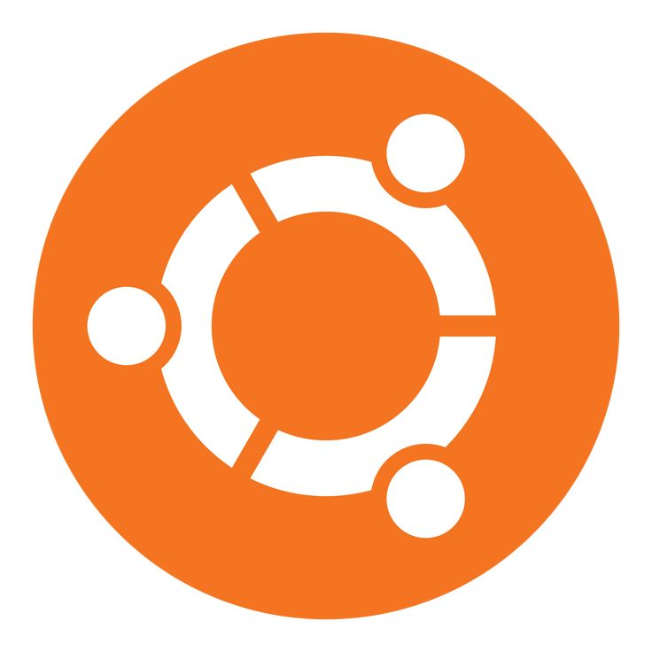
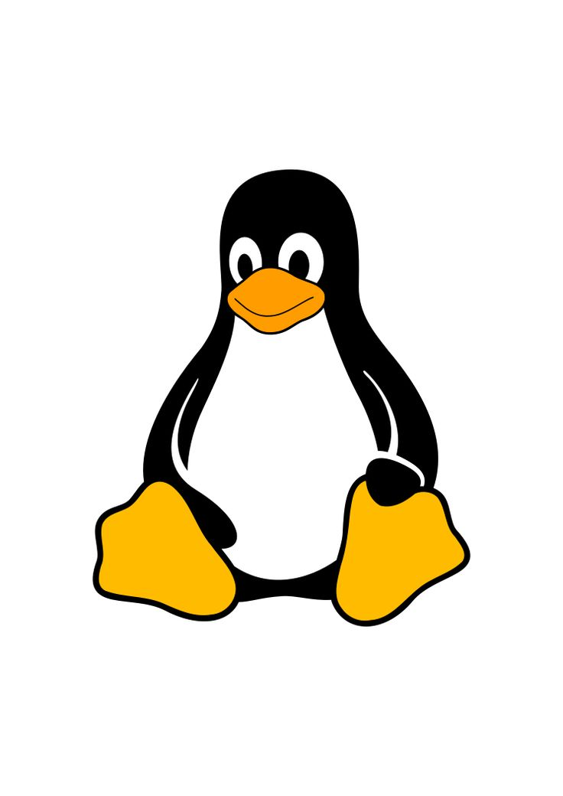
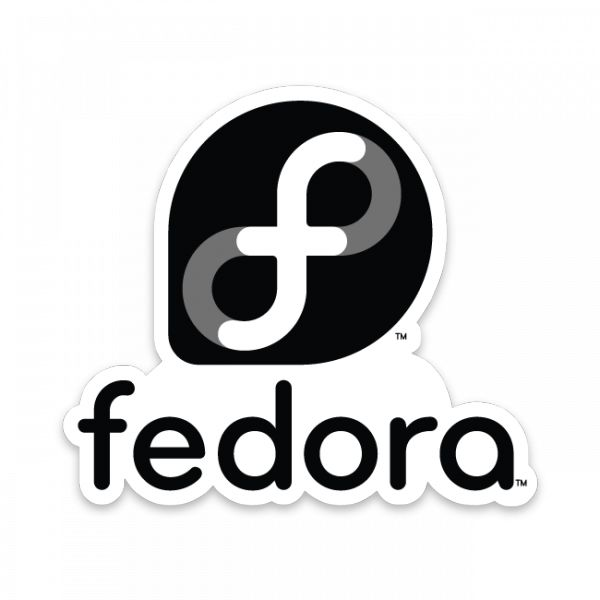
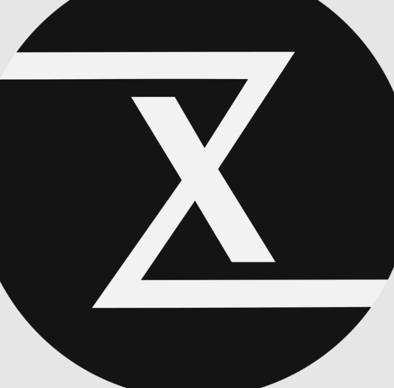

Для початківцівUbuntu
Популярний вибір із великою спільнотою та зрозумілим графічним інтерфейсом.
Офіційний сайт
Tuff LinuxТвій перший крок у Linux
Linux — це не страшно і не лише для програмістів. Розберімося, що це таке і як спробувати його самому.
Без зайвого жаргону. Українською. У твоєму темпі.
01 / Знайомство
Якщо коротко: це операційна система — програма, яка допомагає комп’ютеру працювати та запускати інші програми.
Точніше, Linux — це ядро системи. Разом із програмами та інструментами воно утворює різні системи, які називають дистрибутивами. Багато з них безкоштовні, мають відкритий код і розвиваються спільнотами людей.
02 / Знайди свій варіант
Ось кілька популярних дистрибутивів, які часто радять новачкам.

Для початківцівПопулярний вибір із великою спільнотою та зрозумілим графічним інтерфейсом.
Офіційний сайтЗвичне робоче середовище та простий перехід із Windows.
Офіційний сайт
СучаснийСвіжі технології та різні варіанти робочого середовища.
Офіційний сайт
Від TUXEDOTuxedo-OS це наша створена система в якій багато функцій для IT-спеціалістів від Artem Myha .
Офіційні ISO-файлиМінігра / TUXEDO OS
Запусти раунд і натискай на логотип якомога швидше за 15 секунд.
Готовий? Натисни «Старт»!
Перш ніж встановлювати систему, перевір її у віртуальній машині або в режимі Live USB. Завжди збережи резервну копію важливих файлів.
03 / Встановлення без поспіху
План для першого знайомства. Встановлювати Linux на комп’ютер необов’язково.
Для початку підійдуть Ubuntu або Linux Mint. Завантаж образ лише з офіційного сайту дистрибутива і перевір системні вимоги для своєї моделі комп’ютера.
Збережи важливі документи, фото та паролі на окремий носій або у надійне сховище. Переконайся, що копія відкривається.
Створи Live USB за офіційною інструкцією дистрибутива, перезавантаж комп’ютер із флешки й обери режим пробного запуску, якщо він доступний. Зміни в такому режимі зазвичай не встановлюють систему на диск.
Інсталятор може змінити розділи диска й видалити наявні дані. Не обирай стирання диска чи зміну розділів, якщо не розумієш наслідків; попроси допомогу досвідченої людини.
Пункти тут — загальні поради. Кроки інсталятора й доступність Live USB залежать від обраного дистрибутива та комп’ютера. Дотримуйся актуальної офіційної документації.
04 / Не бійся термінала
Термінал — це спосіб давати системі команди текстом. Почни з цих безпечних команд для перегляду інформації.
# Де я зараз?
$ pwd# Яка це система?
$ uname -s# Що є в цій папці?
$ lsЦі команди показують інформацію і не змінюють файли.
Твій шлях — твій вибір
Найкращий спосіб познайомитися з Linux — почати з цікавості та робити резервні копії.
На початок